Bayesian model selection demo for polynomial regression
This illustartes that if we have more data, Bayes picks a more complex model. We use empirical Bayes (EB) and variational Bayes (VB) to tune the hyper-parameter and approximate the marginal likelihood
% This file is from pmtk3.googlecode.com % Based on a demo by Zoubin Ghahramani % For EB, we either use the pmtk wrapper to Tao Chen's code % and to Ian Nabney's netlab code. The netlab version seems % to work better when N is small (~8), but both give the same % results when N is large (~ 32). clear all; Ns = [5 30]; for ni=1:length(Ns) ndata = Ns(ni); setSeed(2); x1d=rand(ndata,1)*10; % input points e=randn(ndata,1); % noise ytrain = (x1d-4).^2 + 5*e; % actual function plotvals1d = [-2:0.1:12]'; % uniform grid for plotting/ testing trueOutput = (plotvals1d-4).^2; %names = {'vb', 'ebNetlab', 'ebChen'}; names = {'VB', 'EB'}; for i=1:length(names) %fitFn = fitFns{i}; predFn = predFns{i}; name = names{i}; degs = [1 2 3]; for m=1:length(degs) deg=degs(m); X = polyBasis(x1d, deg); X = X(:,2:end); % omit column of 1s Xtest = polyBasis(plotvals1d, deg); Xtest = Xtest(:, 2:end); [model, logev(m)] = linregFitBayes(X, ytrain, 'prior', name); [mu, sig2] = linregPredictBayes(model, Xtest); sig = sqrt(sig2); % Plot the data, the original function, and the trained network function. if 1 figure; plot(x1d, ytrain, 'ok', 'markersize', 10, 'linewidth', 3) hold on plot(plotvals1d, trueOutput, 'g-', 'linewidth', 3); plot(plotvals1d, mu, 'r-.', 'linewidth', 3) plot(plotvals1d, mu + sig, 'b:'); plot(plotvals1d, mu - sig, 'b:'); %title(sprintf('d=%d, logev=%5.3f', deg, logev(m))) title(sprintf('d=%d, logev=%5.3f, %s', deg, logev(m), name)) printPmtkFigure(sprintf('linregEbModelSelVsN%dD%d%s', ndata, deg, name)) end end figure; PP=exp(logev); PP=PP/sum(PP); bar(degs, PP) axis([-0.5 length(degs)+0.5 0 1]); set(gca,'FontSize',16); aa=xlabel('M'); set(aa,'FontSize',20); aa=ylabel('P(M|D)'); set(aa,'FontSize',20); %title(sprintf('N=%d', ndata)) title(sprintf('N=%d, method=%s', ndata, name)) printPmtkFigure(sprintf('linregEbModelSelVsN%dPost%s', ndata, name)) end % for i end % for ni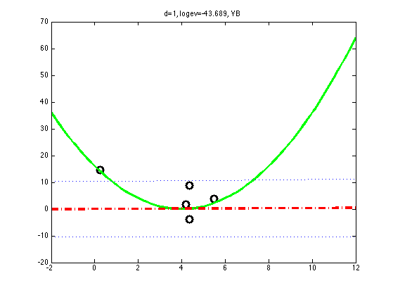 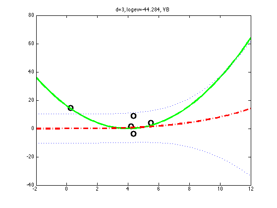 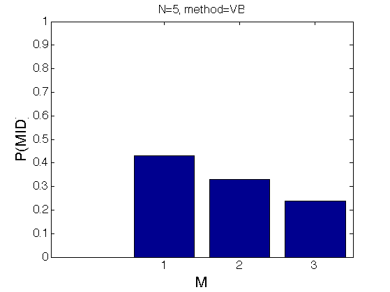 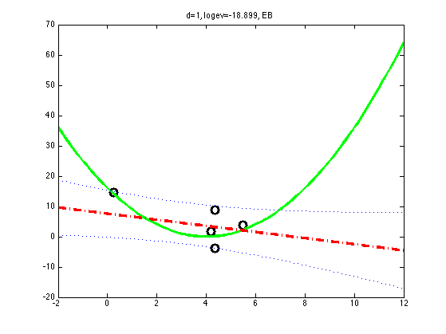 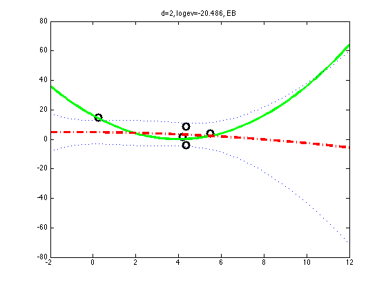 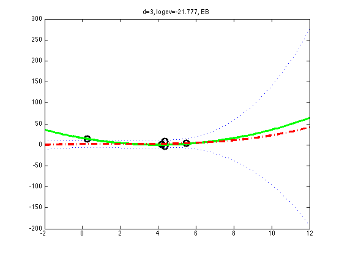 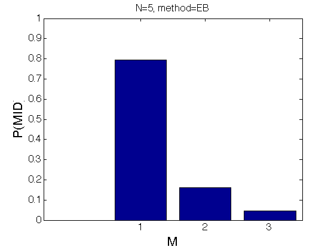 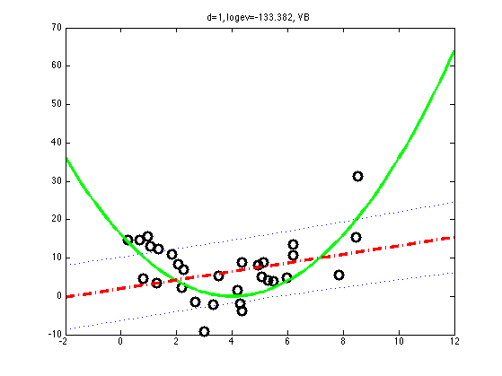 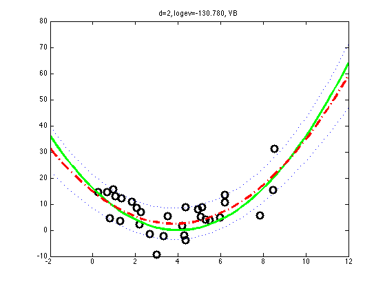 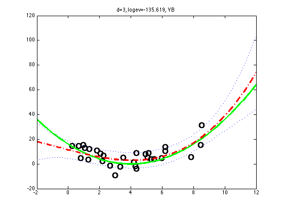 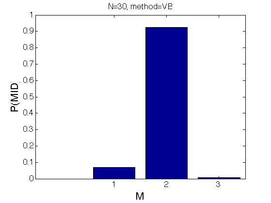 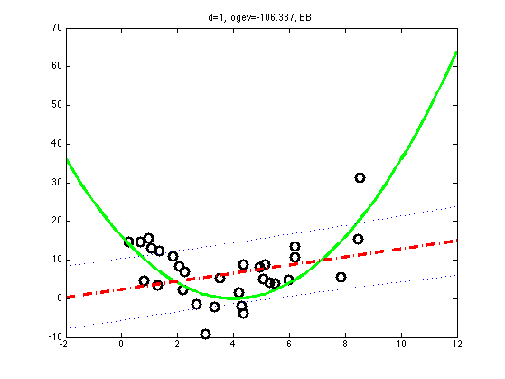
 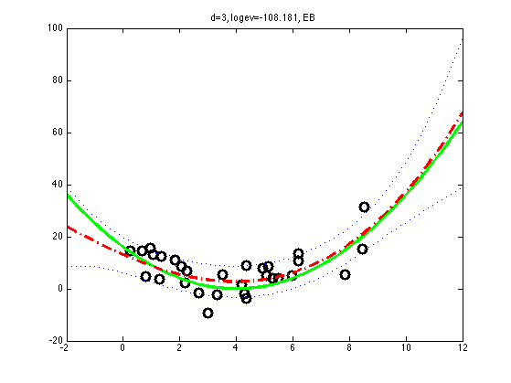
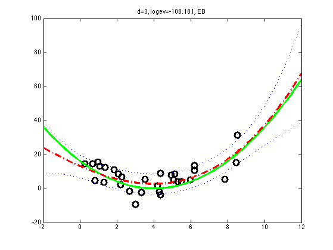